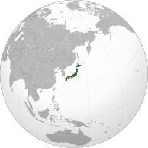
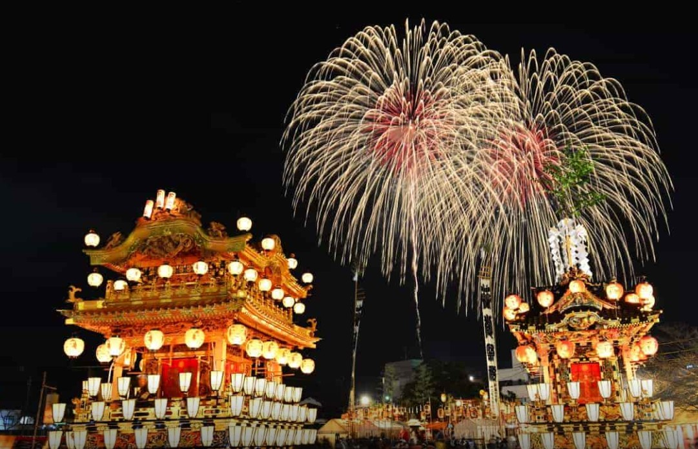
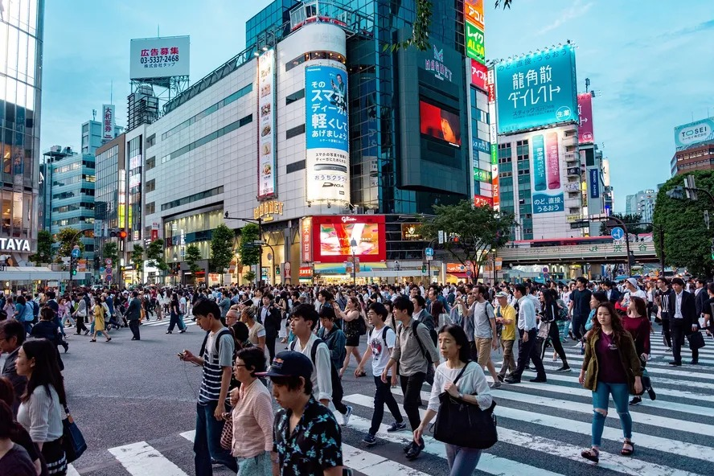
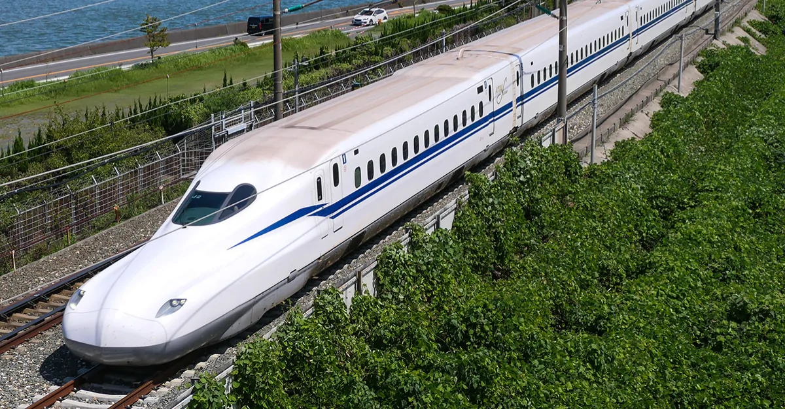

Localização:
O Japão é um arquipélago localizado no extremo leste da Ásia, mais precisamente no Oceano Pacífico.
Cultura:
O Japão tem uma cultura rica e única que mistura tradições milenares com tecnologia de ponta. Alguns aspectos marcantes:
- Respeito e educação são pilares fundamentais na sociedade japonesa.
- Religiões predominantes: xintoísmo e budismo.
- Valorizam muito cerimônias tradicionais, como a cerimônia do chá e os festivais (matsuri).
- Artes tradicionais incluem ikebana (arranjo de flores), origami (dobradura de papel), e caligrafia (shodō).
- A cultura pop japonesa também é muito influente no mundo, com animes, mangás e videogames
Culinária:
A culinária japonesa é famosa pela simplicidade, frescor e apresentação cuidadosa. Pratos populares:
- Sushi: peixe cru com arroz temperado.
- Sashemi: fatias de peixe cru, sem arroz.
- Ramen: macarrão em caldo quente com carne e vegetais.
- Ramen: frutos do mar ou legumes empanados e fritos.

Habitantes:
O Japão tem cerca de 125 milhões de habitantes. A população japonesa é uma das mais envelhecidas do mundo, com alta expectativa de vida.
A capital, Tóquio, é uma das maiores e mais densamente povoadas metrópoles do mundo, com mais de 37 milhões de pessoas na região metropolitana.
Curiosidades:
Apesar das roupas ocidentais serem as mais comuns no dia a dia, ainda se usam roupas tradicionais em ocasiões especiais, como Kimono, Yukata e Hakama.
Hanami: a tradição de apreciar a florada das cerejeiras (sakura), que acontece na primavera
Trem-bala (Shinkansen): famoso pela pontualidade e alta velocidade (até 320km/h).
Muitos banheiros públicos são super tecnológicos, com assentos aquecidos e jatos de água
O Japão tem mais de 6.800 ilhas.
